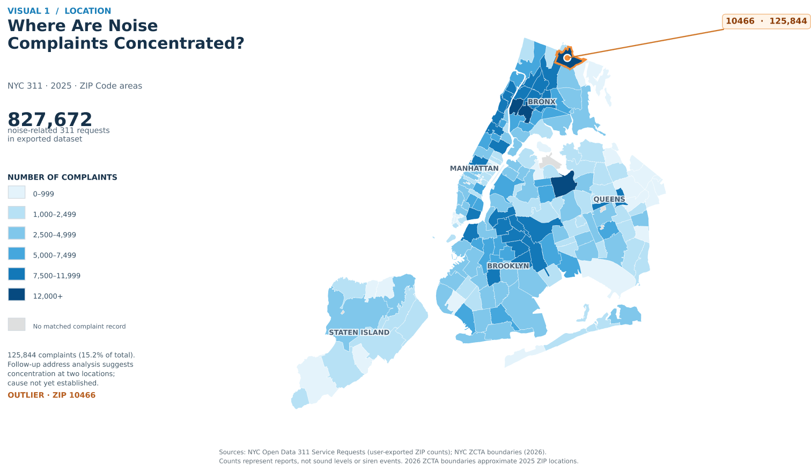
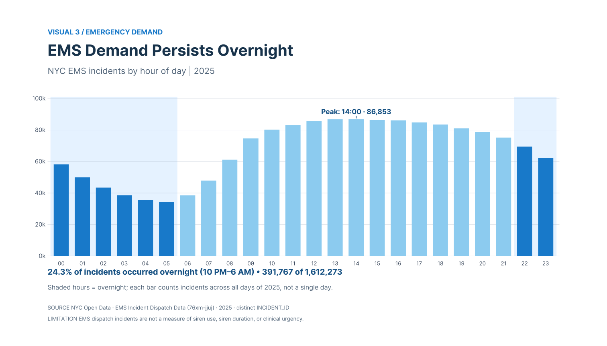
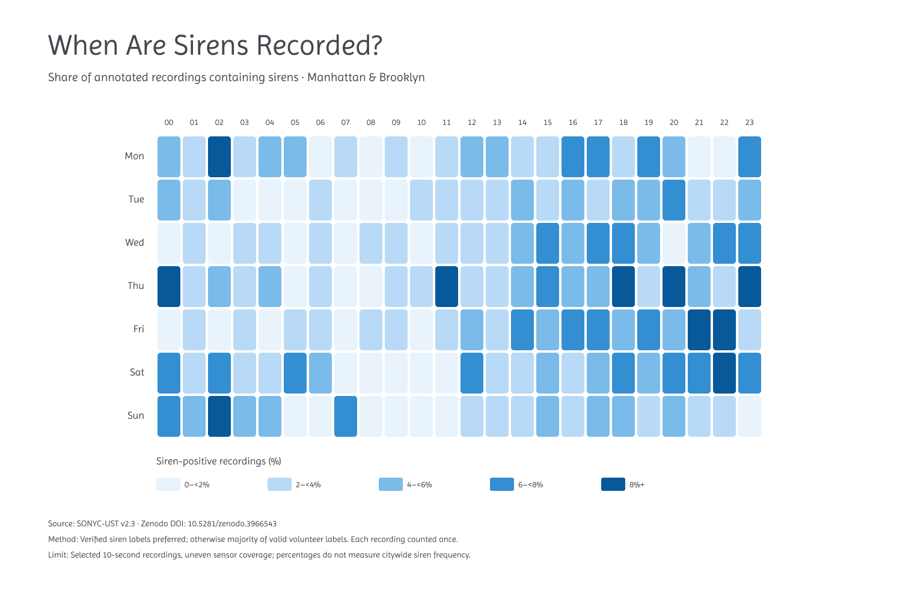

Emergency sirens help save lives. But how can a city balance urgent response with the everyday soundscape of its neighborhoods?
Enter the story →In a city that never stops moving, emergency sirens signal help on the way. They can also interrupt conversation, concentration, and rest. Understanding this tension starts with looking at what different datasets can—and cannot—tell us.
For people living and studying near busy streets, repeated loud sounds can shape how a neighborhood feels. These experiences motivate the questions in this project, but are not measured directly by the charts below.
311 requests describe reported noise concerns; sensor annotations identify sirens in sampled recordings; EMS dispatch records show emergency demand. None of these alone measures siren loudness across all of NYC.
NYC 311 noise-related requests vary by ZIP Code. The map below highlights that uneven geographic distribution, while also showing a notable ZIP Code outlier.

Source: NYC 311 Service Requests, 2025. Counts represent reports, not measured sound levels or siren incidents. The outlier ZIP 10466 warrants further investigation.
EMS dispatch records show that emergencies continue after dark. This matters when considering time-sensitive siren policy: noise reduction and emergency response must be considered together.

Source: NYC Open Data, EMS Incident Dispatch Data, 2025. These records do not directly measure siren use, duration, or loudness.
This additional heatmap examines the share of annotated short recordings that contain sirens in a selected Manhattan and Brooklyn sensor sample.

Source: SONYC-UST v2.3, Zenodo DOI: 10.5281/zenodo.3966543. Percentages are not citywide siren frequency; sensor coverage is uneven.
Select a borough to connect this citywide story to a familiar place. This is a starting point for exploration—not a neighborhood-level estimate.
This simplified version does not calculate borough totals from the ZIP Code dataset. It avoids presenting invented numbers.
Safer streets and quieter neighborhoods both matter. Read the city's noise guidance and consider how data can support a balanced conversation about emergency sound.
Explore NYC Noise Code ↗